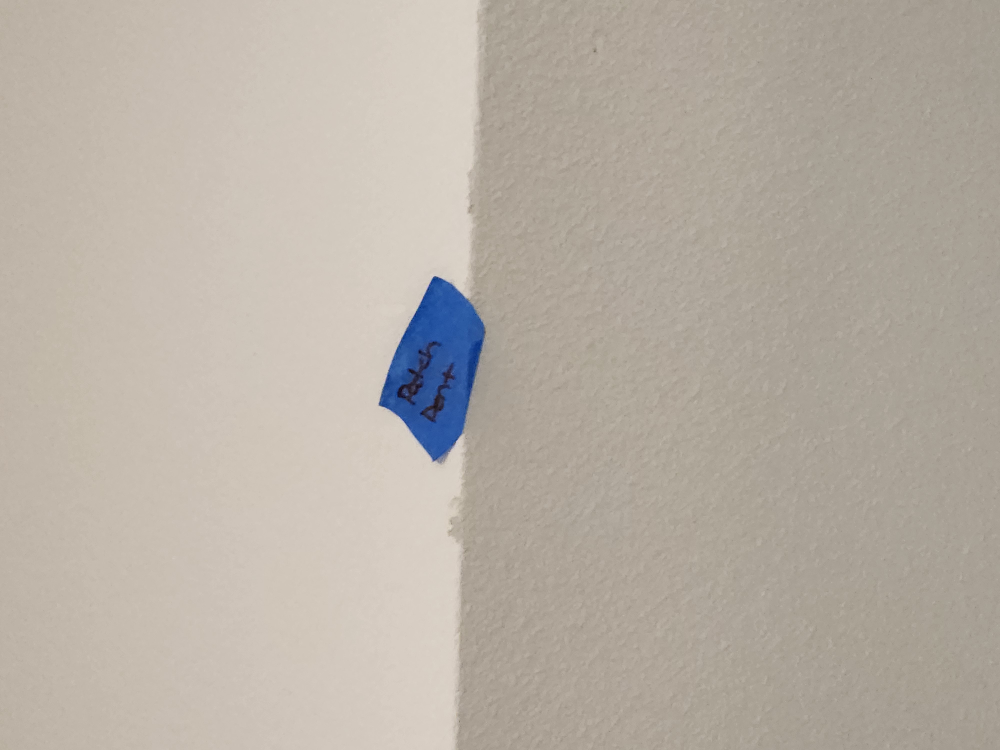
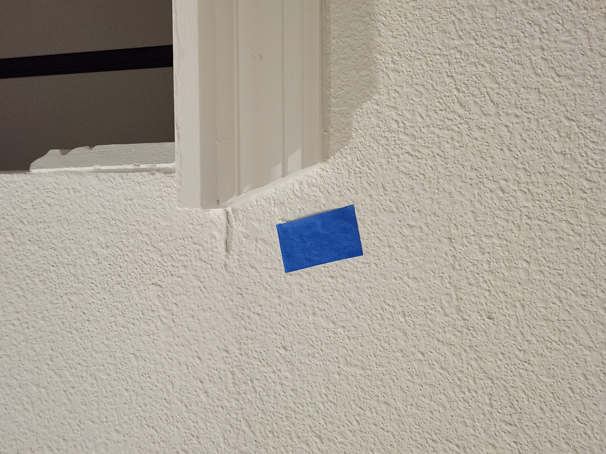
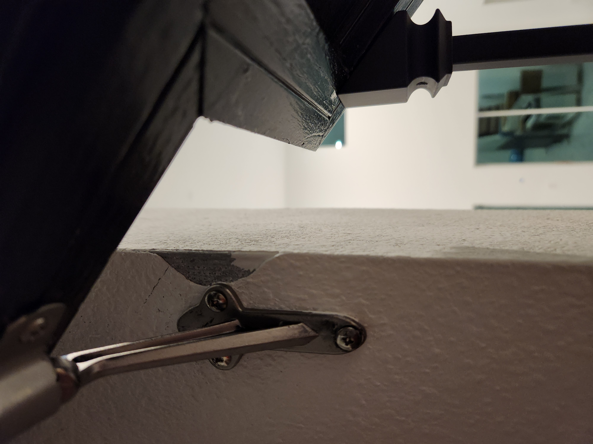

Sprinkler is leaking after turned off and not spraying properly. Water runs off to the driveway. We turned it off to prevent wasting water.
Please click on the video.
N
Front outside Door
The door frame by the glass is white, it should be painted red.
N
Front inside Door
Inside of the door frame has rough circle, this should be smooth frame. This dot surrounds the entire glass frame.
N
Paint on paver
There are white paint on the paver around the front door and front of the garage.
I tried to clean the paint off so I can seal the paver but the paint doesn't come off.
Please either clean the paint off or replace the paver.
N
Rain Bird
The box is missing an adapter for WiFi for smart home connectivity. Shown in the red box highlighted
N
Outside Small Garage
Facing the small garage, the trim near the roof, the paint is incomplete
N
Garage
Inside the 2 car garage, face the street, look to the left between the garage and door.
There is a huge hole.
N
Garage Supporting Wall
Inside the 2 car garage facing the street, look to the left wall closest to the garage.
The base is not complete and looks like something bit off the bottom side. For a new house with the price paid, it shouldn't look broken and is unacceptable.
N
Master Room
Location
Issue
Image
Resolved
Master entry door
The video shows that the top part of the door scrapes the frame as it closes. If you look half way down, it shows a gap. It looks like the door was installed crooked.
N
Master Wall
As you walk through the master door, look to the bottom right. There is a discolored scrape, looked like the paint was scraped off.
N
Hallway to the bathroom
Go to the bathroom. Past the left closet Bottom wall there is a hole
N
Light Switch, switched His/Her section
Facing the light switch for the lights above the sinks. The left switch turns on the right light and the right switch turns on the left light. The left switch should be consistent with the left light and the same for the right.
N
Master tub
If you press on the rim or go inside there is a squeaky sound
N
Master shower tile
The shower tile on the floor is cracked and could lead to water leakage.
N
Master bathroom: The bottom frame on the outside shower glass wall
See the video. The bottom seal is not even and has a hole along the seal/frame.
N
Master bathroom: Edge along the wall
Left side of the shower has a scrape along the edge
N
Master bathroom: Edge near the shower
Right side at the shower entrance is a scrape along the lining edge
N
Master bathroom window
Some paint came off the window edge
N
Kitchen
Location
Issue
Image
Resolved
Kitchen door pantry
Pantry door doesn't shut. See video
N
Kitchen Island
Facing the kitchen the island on the right side shows a scrape along the edge
N
Kitchen Island
The kitchen island near the refrigerator shows a score.
N
Kitchen Island
The sink was leaking from initial walkthrough. It's repaired but where the water sat in the cabinet bubbled up on the surface. The bubble is permanent since it's still there
N
Kitchen Countertop
I really tried to clean off this circle stain. Most came off but the stain is still visible.
N
Kitchen corner wall
Extra material sticking out from the wall
N
The divider between the kitchen and living room
The area facing the kitchen near the pantry have some discoloration

N
The opening between the kitchen and living room
The 90 degree corner is slanted. It's very obvious especially at night when the shadow cast in the corner. It appears lopsided
Left side is OK
Right side lop by a quarter inch
Look lopped
The other side is fine
N
Dining and Living Room
Location
Issue
Image
Resolved
Dining Room
The wall near the butler pantry has a puncture
N
Switch by the front door
The switch by the front door is warped. The wall is not even.
N
Garage Door
Garage door exit at the lower right wall has a hole
N
Half Bathroom
Wall next to the sink has a hole
N
Living room under the two top windows
There are 2 spots that can't be cleaned.
N
Facing backyard in the living room. The left screen door.
The screen door doesn't lock no matter how hard I push the door in.
N
Grout on the tile
There's not enough grout on the tile and some of the tiles are not even. We go barefoot in the house and this uneven tiles or areas with not enough grout stubb the foot.
N
Stairs
Location
Issue
Image
Resolved
Above the square part of the stairs
Score on the wall

N
Going up the stair, look at the top right corner
Although it has been fixed from the initial walk through, one corner of this area wasn't fixed. See the picture it looked deformed and closer look shows a hole
N
Going up the stair, behind the second holder by the wall
A patch fell off and not painted

N
This you can see from the first floor. Look at the center stair rail on the lower right.
The first layer and paint either fell off or peeled off
N
Going up the stars on the right side.
Paint and drywall fell off
N
There a few at the top of the stairs.
At the upper part of the baluster, there is a gap on the cap and doesn't sit aganist the rail. There is a total of 8 caps that are crooked.
N
The last rail leading to the back jack and jill room
Ths one stair rail is rough enough to cause a splinter, the other rail underside look smooth and clean.
N
Middle stair joint
In the crease of the stair joint has missing paint and shows the raw wood.
N
Second Family Room (Loft) and Hallway
Location
Issue
Image
Resolved
Second floor near the loft
A line between the drywall is exposed in the ceiling
N
Hall in front of the back Jack and Jill room
Looking up is a while nail sticking out of the wall
N
4 bedrooms and Laundry room
The Jack and Jill room facing the backyard
Hole in the corner window
N
The Jack and Jill room facing the backyard
Near the closet at the lower wall is scratched
N
Laundry room window
Hole in the corner and crack along the side
N
1 Bathroom with shower
The left sink has the hot and cold color mixed. Red color faucet should be on the left and blue on the right
N
2 Bathroom with shower
The top left window has a chip fall off
N
3 Bathroom with shower
Missing a patch to one of the nail. Should the nail top impression show through?
N
Room facing the backyard (not the jack and jill)
Outside of the room, the hall top notch shows is disconnect with the ceiling